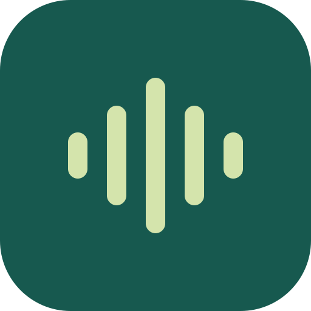

VOICE CARDS
系統語音診斷
每個按鈕按一次，記下有沒有聲音。
這一頁不送出任何資料。請把裝置音量調高，依序按下每個按鈕，聽完後記下「有聲」或「無聲」，再把下方紀錄的文字一起回報。
正在讀取語音清單…
A 美佳（指定語音物件）
B 只指定 zh-TW，不指定語音物件
C 英文語音（Samantha 或任一 en-US）
D 先把 audioSession 設成 playback，再唸美佳
E 先播 1 秒無聲音檔，播放中唸美佳
F 婷婷（zh-CN）
停止所有朗讀
尚未開始。
← 回到診間語音卡片